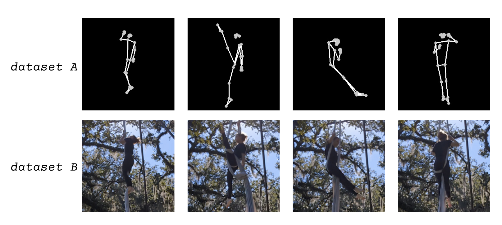
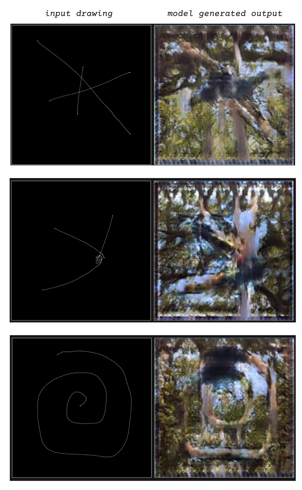

@vipyne

vipyne trained a model on a dataset of their own aerial silk poses paired with “stick figure” images produced by running the aerial silk images through a pose detection script. They later experimented with inputting drawings to the trained model to generate images.
